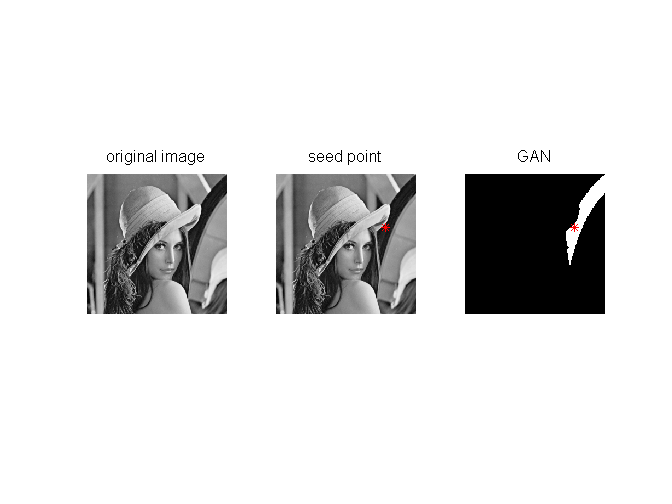
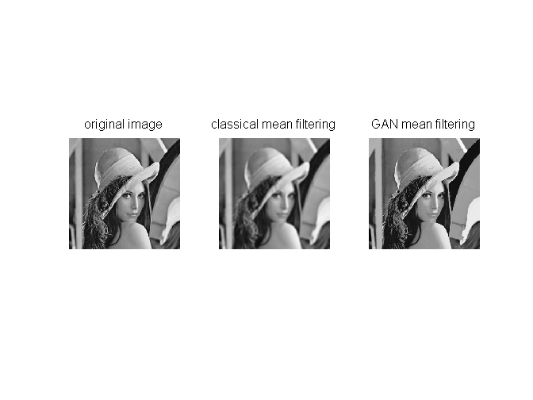
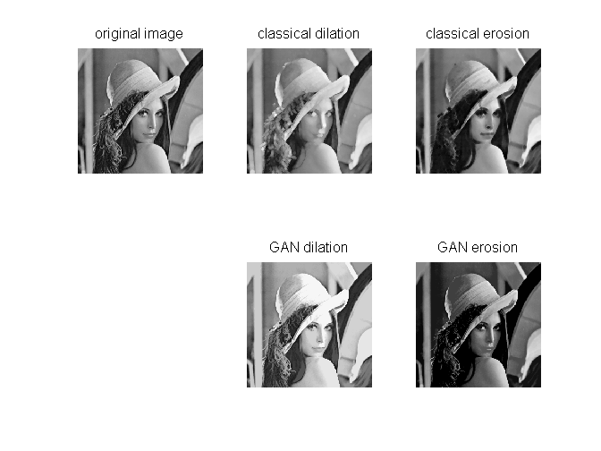

PW GANIP / Solution
Contents
0 - Cleaning
clc; clear all; close all;
1 - GAN
A=imread('lena256.bmp');
A=double(A);
p=[200,100];
mtol=30;
GANp=GAN(A,p,mtol);
figure
subplot(131);imshow(A,[]);title('original image')
subplot(132);imshow(A,[]);hold on;plot(p(1),p(2),'*r');title('seed point')
subplot(133);imshow(GANp,[]);hold on;plot(p(1),p(2),'*r');title('GAN')

2 - GAN Choquet filtering
h=ones(5,5)/9;
B=imfilter(A,h,'symmetric');
mtol=30;
tic
C=GANmean(A,mtol);
toc
figure
subplot(131);imshow(A,[]);title('original image')
subplot(132);imshow(B,[]);title('classical mean filtering')
subplot(133);imshow(C,[]);title('GAN mean filtering')
Elapsed time is 0.701532 seconds.

3 - GAN morphological filtering
se=strel('disk',2);
Bdil=imdilate(A,se);
Bero=imerode(A,se);
tic
mtol=30;
Cdil=GANdilation(A,mtol);
Cero=GANerosion(A,mtol);
toc
figure
subplot(231);imshow(A,[]);title('original image')
subplot(232);imshow(Bdil,[]);title('classical dilation')
subplot(233);imshow(Bero,[]);title('classical erosion')
subplot(235);imshow(Cdil,[]);title('GAN dilation')
subplot(236);imshow(Cero,[]);title('GAN erosion')
Elapsed time is 1.438556 seconds.

4 - Useful functions
type GAN
type GANmean
type GANdilation
type GANerosion
function RES = GAN(A,p,m)
RES = zeros(size(A));
RES(p(2),p(1)) = 1;
s = A(p(2),p(1));
thresh = (A >= s-m) & (A <= s+m);
RES = imreconstruct(logical(RES),thresh,8);
function RES = GANmean(A,m)
RES = zeros(size(A));
parfor s = 0:255
thresh = (A >= s-m) & (A <= s+m);
seed = (A == s);
thresh = imreconstruct(seed,thresh,8);
label = bwlabeln(thresh,8);
nbLabel = max(label(:));
for n = 1:nbLabel;
currentLabel = (label == n);
values = A(currentLabel);
meanValue = mean(values);
result = meanValue.*currentLabel.*seed;
RES = RES + result;
end
end
function RES = GANdilation(A,m)
RES = zeros(size(A));
parfor s = 0:255
thresh = (A >= s-m) & (A <= s+m);
seed = (A == s);
thresh = imreconstruct(seed,thresh,8);
label = bwlabeln(thresh,8);
nbLabel = max(label(:));
for n = 1:nbLabel;
currentLabel = (label == n);
values = A(currentLabel);
values = sort(values);
result = double(values(length(values)))*currentLabel;
RES = max(RES,result);
end
end
function RES = GANerosion(A,m)
RES = 255*ones(size(A));
parfor s = 0:255
thresh = (A >= s-m) & (A <= s+m);
seed = (A == s);
thresh = imreconstruct(seed,thresh,8);
label = bwlabeln(thresh,8);
nbLabel = max(label(:));
for n = 1:nbLabel;
currentLabel = (label == n);
values = A(currentLabel);
values = sort(values);
result = double(values(1))*currentLabel+255*(~currentLabel);
RES = min(RES,result);
end
end